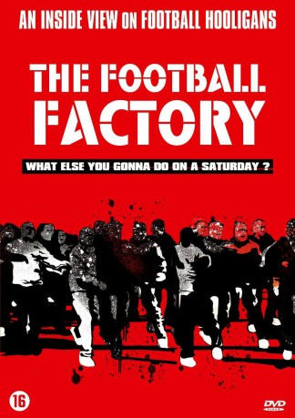

#6896 The Football Factory
 
 IMDB-Wertung: 6.9 / 10
IMDB-Wertung: 6.9 / 10  Metascore: 0
Metascore: 0 
Tommy liebt Fußball. Aber eigentlich interessiert er sich mehr für das Drumherum als für das Spiel. Denn das Wesentliche an einem Fußballwochenende ist für ihn die Schlägerei mit den Hooligan-Fans der gegnerischen Mannschaft. Voll mit Alkohol und Drogen verabredet sich der Chelsea-Anhänger mit ihnen, um sich das Gehirn aus dem Kopf zu prügeln. Und ab Sonntag heißt es dann wieder: freuen auf den nächsten Samstag und bis dahin eine bürgerliche Existenz vortäuschen.
Jahr: 2004
Dauer: 90 Minuten
FSK: 16
Land: England Studio: Kinowelt Home EntertainmentTonspuren: DTS - ,
Untertitel: Deutsch,
Auflösung: 1080p (1920x824) Größe: 6922 MB
Genre: Drama, Krimi, Sport
Regisseur: Nick Love
Drehbuch: John King
Soundtrack:
Darsteller:
 Danny Dyer als Tommy Johnson
Danny Dyer als Tommy Johnson Frank Harper als Billy Bright
Frank Harper als Billy Bright Tamer Hassan als Fred
Tamer Hassan als Fred- Roland Manookian als Zeberdee
 Neil Maskell als Rod
Neil Maskell als Rod Dudley Sutton als Bill Farrell
Dudley Sutton als Bill Farrell Jamie Foreman als Cabbie
Jamie Foreman als Cabbie- Calum MacNab als Raff
- John Junkin als Albert Moss
- Sophie Linfield als Tamara
- Kara Tointon als Tameka
- Simon Weir als Scouser 2
- Greg Donaldson als Barman
- Luke Healy als Waiter
- Luing Andrews als Billy Bright's Dad
 Tony Cook als Millwall Firm
Tony Cook als Millwall Firm Philip Howard als West Ham firm
Philip Howard als West Ham firm- Tony Denham als Harris
- Michele Hallak als Shian
- Daniel Naylor als Terry
- Alison Egan als Barbara
- Adam Bolton als Adam
- Philip Dunbar als Judge
- Ronnie Large als Referee
- Harry Lynch als Billy Bright's Son 1
- Andrew Routledge als Billy Bright's Son 2
- Terry McKenna als Young Kid 1
- Darren Wilson als Young Kid 2
- Joe McCorry als Young Kid 3
- Reggie Bisset als Squirt
- Clare McNamara als Woman with Pram
- Christopher Ravenscroft als Tamara's Father
- Lin Blakley als Tamara's Mother
- Danny Rees als Scouser 1
- Diana Van Proosdy als Mavis
- Ricky Eastop als Young Tommy
- Jack Mason als 10 Year Old Tommy
- Alfie Southion als Young Zeberdee
- Dan Mead als Flower Seller
- Ricci McLeod als Luke
- Sonny France als Young Billy Bright
- Joe Lineham als Young Rod
- Louise Liddiard als Young Girl 1
- Zoe Knight als Young Girl 2
- Avtar Kaul als Indian Man
- Anil Lal als Indian Child
- Tom Young als Young Raff
- Tessa Worsley als Mrs. Farrell
- Paul Pariser als Tommy Johnson's Dad
- Jayne Levy als Sauna Girl 1
Datei: X:\2004(A-F)\Football Factory, The (2004, FSK16, 1920x824).mkv seit 06.09.2017
Festplatte: HD 2003-2004-2005(A-F)
 Es gibt insgesamt 39 Filme in der Gruppe '2004(A-F)'
Es gibt insgesamt 39 Filme in der Gruppe '2004(A-F)'